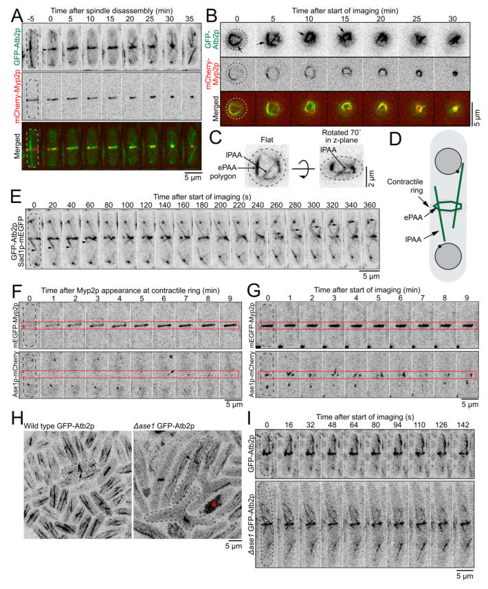

post-anaphase microtubule array
A cytoskeletal part that consists of an array of microtubules and associated molecules that forms at the end of anaphase, and in which microtubules are nucleated from an equatorial microtubule organizing center. [GO:1990295]

NCBITaxon:4896) · Kimberly Bellingham-Johnstun, Zoe L. Tyree, Jessica Martinez-Baird, Annelise Thorn, Caroline Laplante; CC BY, via PubMed Central · CC_BY_4_0 · source: PMC PMC10047812.1 cells-12-00917-f002 · DOI:10.3390/cells12060917Synonyms: PAA; post-anaphase array
Part of: GO:0015630 — microtubule cytoskeleton (no local record)
Has part: equatorial microtubule organizing center (GO:0000923)
Components
| Component | Type | Part of / acts on | Grounding | Genes | Stoichiometry | Essential | Role |
|---|---|---|---|---|---|---|---|
| Alpha tubulin | Protein | part of | InterPro:IPR002452 | tub1, atb2, alp2 | UNKNOWN | Alpha-tubulin class of the microtubule polymer forming the equatorial and longitudinal array.
| |
| Beta tubulin | Protein | part of | InterPro:IPR002453 | UNKNOWN | Beta-tubulin class paired with alpha tubulin in the array microtubule polymer.
| ||
| Microtubule-associated protein, MAP65/Ase1/PRC1 | Protein | part of | InterPro:IPR007145 | ase1 | DISPENSABLE | Resident crosslinker supporting normal equatorial microtubule organization in the S. pombe array; deletion leaves an altered array.
| |
| equatorial microtubule organizing center | Protein complex | part of | GO:0000923 | UNKNOWN | Equatorial nucleating subassembly included within the whole-array boundary; its finer composition is curated in the separate center record.
|
Organism-specific protein examples
Named proteins in which each component's role was established, with the organism the evidence comes from. The component above is the taxon-agnostic family; these are the specific entries behind it.
Alpha tubulin
| Accession | Protein | Gene | Organism | Entry |
|---|---|---|---|---|
UniProtKB:P04689 | Tubulin alpha-2 chain | tub1 | Schizosaccharomyces pombe 972h- (NCBITaxon:284812) | REVIEWED |
Role and evidence (2 references)Reference-sequence exemplar for species-level experiments; no assertion that this exact reference stock was imaged.
| ||||
Microtubule-associated protein, MAP65/Ase1/PRC1
| Accession | Protein | Gene | Organism | Entry |
|---|---|---|---|---|
UniProtKB:Q9HDY1 | Anaphase spindle elongation protein 1 | ase1 | Schizosaccharomyces pombe 972h- (NCBITaxon:284812) | REVIEWED |
Role and evidence (2 references)Reference-sequence exemplar for species-level experiments; no assertion that this exact reference stock was imaged.
| ||||
Canonical examples
NCBITaxon:4896Schizosaccharomyces pombe — Late-mitotic/cytokinetic arrays studied by live-cell microscopy and genetic perturbations. No fungal-wide prevalence or exact reference-strain identity of all experimental stocks is asserted. [DOI:10.3390/cells12060917]
Functions
- nucleus localization
GO:0051647— Limits nuclear migration toward the division plane after anaphase, opposing the displacement produced by mitotic spindle-pole microtubules before septation in S. pombe.DOI:10.1091/mbc.E23-01-0034PAA-deficient cells position nuclei closer to the division plane; longitudinal PAA microtubules dynamically contact and deform the nuclear envelope. Later newborn-cell centering is a distinct interphase-network mechanism.
- Contribution to effective contractile-ring stiffness — The PAA is implicated in the effective stiffness inferred from ring-ablation recoil in S. pombe, conditional on unchanged initial ring tension.
DOI:10.3390/cells12060917Selective mto1-427 PAA impairment increases fitted recoil amplitude. Stiffness interpretation assumes unchanged initial tension; incomplete mutant plateaus and single-plane imaging limit the fitted parameters. This is not a direct stiffness measurement or a universal anchoring requirement.
Mechanism graphs
Equatorial nucleation and array organization (ASSEMBLY)
S. pombe recruitment, nucleation and array organization, bounded by live imaging and genetic perturbations. Contractile-ring Myp2/F-actin is external docking context, not whole-ring membership. Temporal order and recruitment dependencies do not establish a purified binding pathway; Ase1 is not essential for array formation.
| Subject | Predicate | Object | Evidence |
|---|---|---|---|
| Contractile-ring Myp2 and F-actin context | supports | equatorial microtubule organizing center |
|
| equatorial microtubule organizing center | supports | microtubule nucleation by microtubule organizing center |
|
| microtubule nucleation by microtubule organizing center | generates | post-anaphase microtubule array |
|
| Alpha tubulin | contributes_to | post-anaphase microtubule array |
|
| Beta tubulin | contributes_to | post-anaphase microtubule array |
|
| Microtubule-associated protein, MAP65/Ase1/PRC1 | supports | Equatorial microtubule organization |
|
| Equatorial microtubule organization | organizes | post-anaphase microtubule array |
|
Opposing microtubule networks position the nucleus (FUNCTION)
Post-anaphase/telophase nuclear positioning before septation in S. pombe. The basket/contact mechanism is inferred from localization, envelope deformation and network-selective perturbations, not a resolved attachment interface or calibrated force measurement. Later newborn-cell interphase simulations are not a model of this PAA network.
| Subject | Predicate | Object | Evidence |
|---|---|---|---|
| post-anaphase microtubule array | supports | Longitudinal-array contact with the nuclear envelope |
|
| Longitudinal-array contact with the nuclear envelope | supports | Limited nuclear migration toward the division plane |
|
| Limited nuclear migration toward the division plane | contributes_to | nucleus localization |
|
| Mitotic spindle-pole microtubule network | supports | Nuclear displacement away from the cell end |
|
| Nuclear displacement away from the cell end | contributes_to | nucleus localization |
|
Discussions
- CURATION_TODO (RESOLVED): Keep the whole array distinct from its organizing center and other microtubule networks. Parsed checks over 906 existing records and hidden/ignored-inclusive name, accession and citation searches found no whole-array duplicate. GO:1990295 exactly denotes the array, with parent GO:0110165, part-of GO:0015630 and has-part GO:0000923. The has-part existential is not inverted into universal center part-of array. OTHER describes the multi-filament system, not a single filament or fixed stoichiometric complex. ePAA and lPAA are equatorial and longitudinal portions, not early/late arrays or exact whole-array synonyms. Spindle, interphase arrays, individual microtubules and microtubule ends remain distinct.
- CURATION_TODO (RESOLVED): Distinguish array constituents, the nucleating subassembly and external ring context. Alpha/beta tubulin and resident Ase1 belong to the array. Its organizing center is included at subassembly level, without duplicating every center protein. Myp2 and F-actin are upstream ring context; recruitment dependence alone does not make the whole ring a PAA constituent. Mto1/Myp2 spatial offsets and dosage responses constrain simple direct coassembly without excluding indirect association. Unknown tubulin or center assembly essentiality is not replaced by a cell-viability phenotype. Ase1 deletion leaves an altered array, so this constituent is DISPENSABLE for assembly.
- CURATION_TODO (OPEN): Extend PAA-specific composition only after checking localization and assembly evidence. This is not an exhaustive protein inventory. Mal3 is used as a plus-tip reporter in supplementary Figure S2, which has not been directly inspected; no Mal3 class is added from that lead alone. A beta-tubulin family assignment is not an isoform-specific localization assay, so no Nda3 protein example is supplied. InterPro families define classes, not universal PAA residence of every family member. Direct PAA-specific evidence is needed before adding other motors or microtubule-associated proteins.
- KNOWLEDGE_GAP (OPEN): Resolve the physical PAA-nuclear-envelope interface and transmitted forces. Contact imaging, envelope deformation and selective perturbations support a mechanical basket interpretation, but do not identify a purified interface or calibrated forces. Protection from septal cutting, DNA-damage avoidance and precise inheritance benefits remain hypotheses; no nuclei were cut by the ring after PAA loss under the reported conditions. Later newborn-cell simulations model interphase microtubules and growth, not PAA. MBC affects multiple networks and can leave residual PAA signal.
- CURATION_TODO (RESOLVED): Keep inferred effective stiffness separate from direct measurements and universal cytokinesis requirements. Ablations used rings approximately 20-50 percent constricted, single-plane imaging and recoil fits. Interpreting increased recoil as reduced effective stiffness assumes unchanged initial tension. Mutant recoil often failed to plateau or moved out of plane; fitted amplitudes and timescales are lower bounds. Selective mto1-427 PAA impairment did not measurably alter anchoring, constriction or cytokinetic timing under the tested conditions. Complete mto1 deletion affects additional networks and cannot establish a PAA-only healing or timing defect. These experiments do not exclude stress-specific roles.
- CURATION_TODO (RESOLVED): Preserve taxon, source-access and quantitative limits. Only S. pombe is a canonical example; reference-sequence taxon 284812 does not identify every experimental stock. Main Results, Discussion and Methods of the two 2023 papers and Results/Discussion of the 2010 targeting paper were read. Separate strain supplements, actual movies, raw data and inline equation graphics remain uninspected. No clade-wide prevalence, fixed whole-array copy number, universal dimension, exact Complex Portal composition, trait link or pathway relation is inferred. The hosted figure is the unchanged CC BY 4.0 original; restricted-license imagery from the nuclear-position study is not hosted.
Evidence
GO:1990295Native non-obsolete identity, definition, exact aliases and outgoing mereology verified through OAK on 2026-10-08.DOI:10.3390/cells12060917PMID 36980258; native PMC10047812.1 Results, Discussion, main Methods and figure captions read. Figure 2 inspected unchanged and verified against native media checksums.DOI:10.1091/mbc.E23-01-0034PMID 37099380; published PMC10398876.1 Results, Discussion, main Methods and embedded captions read. Separate movies, strain supplements, raw data and inline equation graphics were not inspected.DOI:10.1016/j.cub.2010.10.006PMID 20970338; native PMC2989437.1 Results and Discussion read, not detailed supplemental methods. Selective targeting separates PAA and spindle-pole networks.
Curation history
2026-10-08T00:45:29Zcodex · CREATED_RECORD — Scaffolded by scripts/new_record.py2026-10-08T00:48:28Zcodex · EXPANDED_RECORD — Added four source-bounded component classes, two protein examples, two functions, two mechanistic graphs and a checksum-verified CC BY 4.0 figure; preserved identity, taxon and inference limits.
Source: data/structures/cytoskeleton/post_anaphase_microtubule_array.yaml